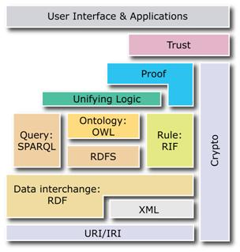

Web | 시멘틱 웹(Semantic web)?
Web 3.0
‘2001년 팀 버너스리등에 의해 웹 기술의 비전으로 시맨틱 웹이 제시되었다. 시맨틱 웹은 기존 웹을 확장하여 컴퓨터가 이해할 수 있는 잘 정의된 의미를 기반으로 의미적 상호운용성(semantic interoperability)을 실현하여, 다양한 정보자원의 처리 자동화, 데이터의 통합 및 재사용등을 컴퓨터가 스스로 수행하여, 인간과 컴퓨터 모두 잘 이해할수 있는 웹을 만드는 것이 목표이다.’
즉, 웹상에서 데이터를 보다 효율적으로 얻기 위해 고안 된 것. 정보가 많아짐에 따라 보다 적확한 정보를 추출하는 데에 어려움이 생길 뿐 아니라, 컴퓨터가 필요한 정보를 추출, 해석, 가공할 수 있는 방법이 없었기 때문에 사용자가 처리해야 한다는 불편함을 해결하기 위해 고안되었다. 컴퓨터가 정보, 데이터 자원을 자체적으로 이해하고 걸러낼 수 있도록 한 것이다.
HTML에서의 시멘틱 웹
<div id="header"> 내용 </div> -> <header> 내용 </header>
div와 id=header값을 모두 읽어야 했던 XHTML이나 HTML4보다 효율적이다.
시멘틱 웹을 구성하는 기술들
- 명시적 메타데이터(explicit metadata)는 메타데이터와 추론에 필요한 규칙 등을 XML(eXtensible Markup Language), RDF(Resource Description framework)와 같은 언어 기술을 통해 표현한다.
- 온톨로지(ontologies)라는 지식 표현 기술을 이용하여 데이터의 의미와 관계 정보를 체계적으로 표현한다.
- 논리적 추론(logical reasoning)은 온톨로지와 함께 결합된 관계 정보들로부터 새로운 정보를 도출해 내는 것을 가능하게 한다.
- RDF(Resource Description Framework) 등과 같은 데이터 표준
시멘틱 웹의 계층구조

- URI (Uniform Resource Identifier): 웹 상의 자원을 식별하기 위한 객체의 명칭, 위치 등의 표현이다.
- IRI (International Resource Identifier with UNICODE)
- XML (eXtensible Markup Language): 메타 정보 표현 언어인 XML, XML 상에서의 동일한 요소나 속성을 구분하기 위해 쓰이는 이름인 Namespace, XML 문서의 마크업 방식에 대한 정의인 XML Schema 등과 같은 다양한 표준을 의미한다.
- RDF (Resource Description Framework): RDF는 정보 자원이나 자원의 구조를 표현하는 언어이다.
- RDFS: RDF의 Schema 정보로 경량의 온톨로지를 표현한다.
- SPARQL: RDF 질의를 위한 언어이다.
- RIF (Rule Interchange Format): 규칙의 정의와 교환을 위한 계층이다.
- OWL: 특정 도메인에 대한 공유되는 일반적인 이해와 개념, 개념과의 관계를 표현하기 위한 언어이다.
- 로직(Logic): 기존에 정의된 정보들을 바탕으로 새로운 결론을 도출하는 추론 기능 등을 의미한다.
- 증거 / 신뢰(Proof / Trust): 웹의 정보에 대한 신뢰를 말한다.